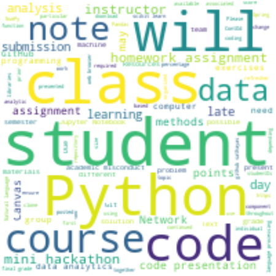

Satoru Hayasaka, Ph.D.
Clinical Associate Professor
Department of Psychology
University of Texas at Austin
Clinical Associate Professor
Department of Psychology
University of Texas at Austin

|

|

|

|

|
 |
|---|
Satoru Hayasaka, Ph.D.
Contact Information:
In person
SEA 2.214
108 E Dean Keeton St.,
Austin, TX 78712
Email
hayasaka_at_utexas_dot_edu
Phone
+1-512-475-6177
An old dog like me can learn a new trick! CSS and HTML powered by Satoru Hayasaka.